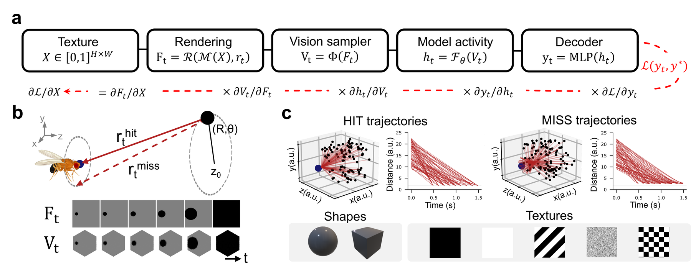

2026 · accepted as NeurIPS 2026 Spotlight
A deep network whose connectivity is fixed by the Drosophila connectome (Lappalainen et al. 2024), modelling the fly's motion-detection circuit, is benchmarked against CNN and optical-flow (RAFT) baselines on collision detection. Using a differentiable 3D rendering pipeline, we probe whether wiring the brain's actual circuit into the network buys robustness, and find that the disruptions caused by adversarial attacks resemble those produced by classic reverse-phi motion illusions.

Differentiable texture → render → vision → model → decoder pipeline · looming geometry · hit / miss trajectories.
New to adversarial attacks? A short, self-contained toy example — FGSM, PGD & adversarial training on MNIST. Open the intro →